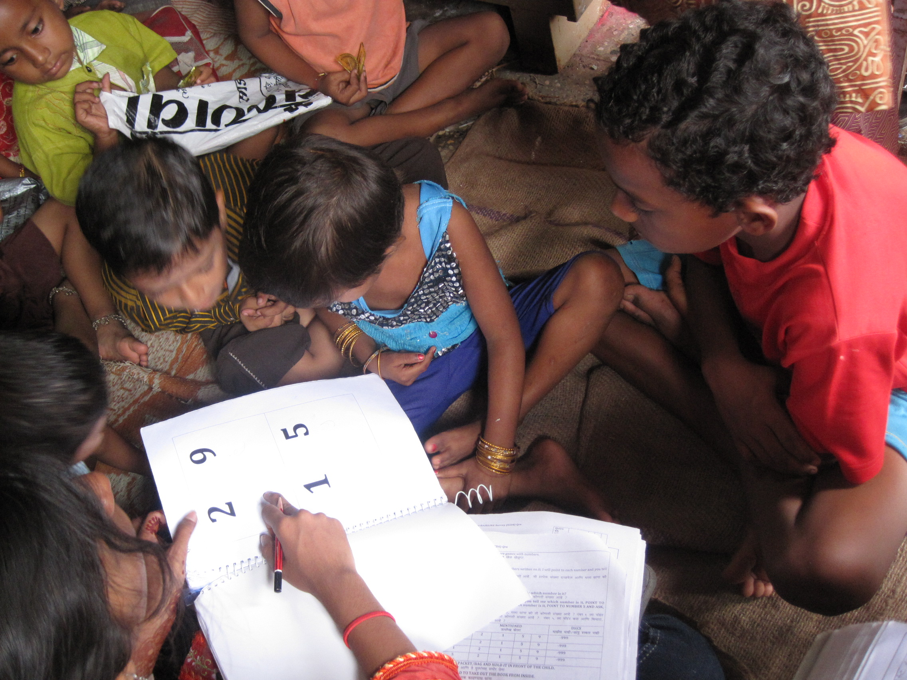
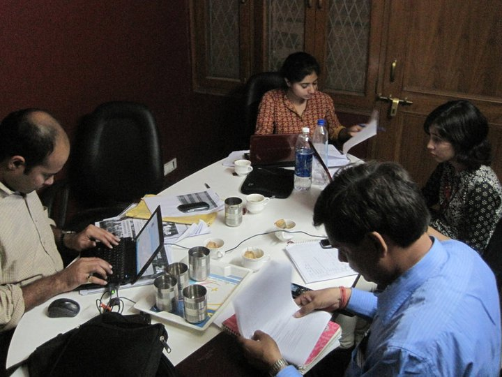

Overview
Design brief
Design a study to test the effectiveness of Sesame programs for early childhood development
The challenges
- Lack of contextually appropriate test tools to draw from
- Lack of familiarity with surveys and questionnaires by a third party
- Difficulty locating the same children at the baseline and endline phases of the experiment
- Difficulty tying standard desired outcomes to programs. For example, programs didn’t directly teach English, but funding was often granted based on improvement in English
- Logistical issues with school closures and absent students
The insights
- We could create a sampling structure that helped us deal with absent students
- We could more easily locate students at endline by conducting surveys in school rather than at home, or by going to school and having children lead us to the desired student’s home
- Students responded better to a mix of photo and text based questions
Our solutions
- Creation of a new test tool that drew on best practices from evaluation and education, but was appropriate to the programs and context of Sesame Workshop India
- Design thinking applied to survey design: we conducted a pre-study and went through several iterations of the survey to modify language, communication, length, and structure.
- Intensive training for survey staff to deliver survey to students in a way that captured authentic and valuable data
- Collection of tracking information: multiple phone numbers, and friends names in order to better track students at end-line
Team
I worked with Naveen, Aditi and Sandhya, my colleagues at Policy Innovations. My key contributions were in Research, Operations, and Stakeholder Management.
Prototyping
Testing the test
Prototyping


Delivery
